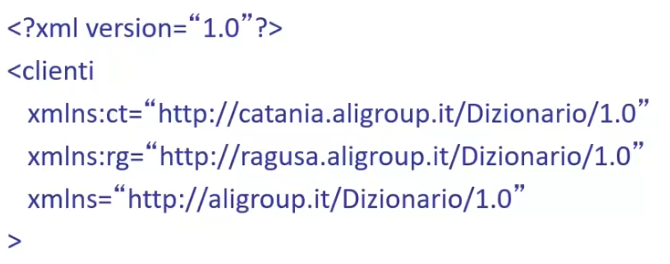

XML è un linguaggio di markup che ci permette di definire la struttura di un documento. Si tratta di un linguaggio cui struttura e informazioni vengono trasmesse tramite una serie di "tag" che prendono il nome di marcatori.
XML non presenta un set di marcatori (come i tag per HTML), ma ci fornisce solo le regole sintattiche per definire nuovi i marcatori secondo le specifiche esigenze.
Per quanto riguarda la sintassi:
Una grammatica DTD è costituita da un insieme di regole che stabiliscono la composizione e la struttura di un documento XML.
Una grammatica DTD mi definisce un insieme di regole che mi dicono se un documento XML è correttamente formattato.
Una grammatica DTD può essere integrata:
La sintassi:
In Dtd possiamo anche dare una definizione di molteplicità agli elementi:
Per quanto riguarda la definizione di attributi per un tag specifico, possiamo specificare in Dtd:
Nell'immagine vediamo come definire un attributo per un tag e come specificare se questo deve essere obbligatorio o meno.
Un altro possibile valore oltre IMPLIED e REQUIRED è FIXED fixed value che ci specifica: "L'attributo
può anche essere omesso
ma se è presente assume il fixed value specificificato".
Qualunque altro specificatore diverso da REQUIRED,IMPLIED,FIXED verrà preso come il valore di default del tag.
<!ATTLIST Informazioni provincia Catania >
Altre due parole chiave sono PCDATA e CDATA, nello specifico la prima forza il parser XML ad interpretare le entità, mentre la seconda disabilita la risoluzione delle entità.
In XML è sempre possibile definire nuove entità oltre le standard, dall'esempio precedente:
Possiamo anche definire nuove entità a partire da risorse esterne:
<!ENTITY abs SYSTEM "abstract.txt" >
Abbiamo così definito una nuova entità abs che possiamo usare all'interno del nostro XML <abstract >&abs</abstract > cui valore sarà preso
direttamente dal file abstract.txt.
Proprio come per le entità di default, usando l'entità con CDATA bloccherò il parser XML che invece di renderizzare il contenuto dell'entità, farà visualizzare il testo "&abs".
XML fornisce un utile meccanismo per la gestione dei namespace. I namespace delimitano degli "spazi per i nomi" e sono utili per eliminare ambiguità nel caso in cui alcuni nomi o attributi usati all'interno di un documento XML sono ripetuti. Ad esempio il titolo di un libro, potrebbe andare in conflitto con il titolo di un dipinto in un file XML.
La sintassi:
nome-namespace:nome-elemento
Un namespace deve essere dichiarato attraverso l'attributo xlmns. Possiamo definire ad esempio il namespace libro:
<biblioteca xlmns:libro="https://www.esempio.org/1999/libro">
</libro:titolo> </libro:titolo>
</biblioteca>
L'attributo xlmns definisce il namespace libro identificandolo univocamente con un URI.
Un Uri viene utilizzato per definire in maniera univoca un namespace, ha la forma di un indirizzo web ma non ha nessuna relazione con esso.
Si vogliono rappresentare le informazioni indirizzo e sito web entrambi con il tag indirizzo.
In questo modo ci sarebbe ambiguità; per eliminare questo problema definiamo due namespace ct e rg.
A questo punto il file xml senza ambiguità sarà:
XPATH è un linguaggio che nasce dall'esigenza di navigare all'interno di file XML (ma anche HTML) per trovare eventuali informazioni.
L'idea di XPATH è quella di poter navigare un file XML come avviene la navigazione nel file system.
Condizioni su elementi/attributi
Ricerca di sotto-elementi a qualsiasi livello
Condizione sulla posizione dei sottoinsiemi
Il tag Libro ha un attributo dispobilità che può essere o "S" o "N", si vuole la lista di tutti quei libri disponibili con Xpath.
doc("libri.xml")/Elenco/Libro/[@disponibilità="S"]/Titolo
A partire da XPath è stato sviluppato un linguaggio di interrogazione in stile SQL per interrogare le sequenze di nodi e per andare anche ad elaborare queste sequenze. In linguaggio in questione si chiama XQuery e si basa su 5 clausole:
La funzione text() estrae il solo contenuto PCDATA di un elemento.
La funzione aggregata count() conta il numero di occorrenze.
La funzione aggregata distinct-values() restituisce i valori univoci contenuti nell'XPath.
Abbiamo anche la possibilità di usare costrutti condizionali if then else
Sintassi if XQuery
if(condition)
then exp
else exp
Quando non è presente, la else va comunque specificata con una exp vuota
Sintassi if XQuery con ramo else vuoto
if(condition)
then exp
else ()
La funzione position() mi restituisce la posizione dell'elemento corrente.
Sintassi position() come predicato XPath
node/subnode[position()<=n]
Prende tutti i subnode con posizione <= n.
XQuery è un linguaggio che prende in input file XML e restituisce file XML, possiamo definire quindi file XML con una struttura custom aggiungendo nuovi tag e attributi.
{
for $libro in doc("libri.xml")//Libro
let $authors := $libro/autore
return <libro numAutori="{count($authors)}"/>
}
Aggiunge l'attributo numAutori in una nuova struttura XML custom
Possiamo usare anche l'operatore di accesso [] per accedere ad una lista di nodi
node/subnode[i]
Xquery Update permette di esprimere anche comandi di modifica, attraverso due direttive:
insert node
new node
as first into xpath_destination
delete node
xpath_destination